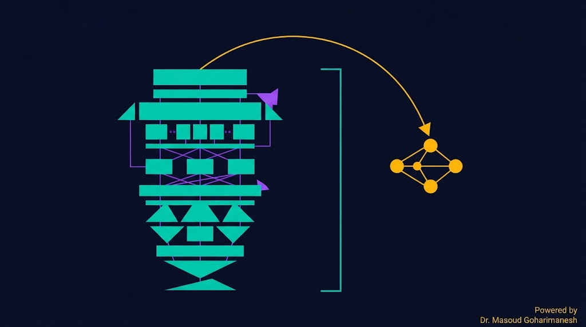
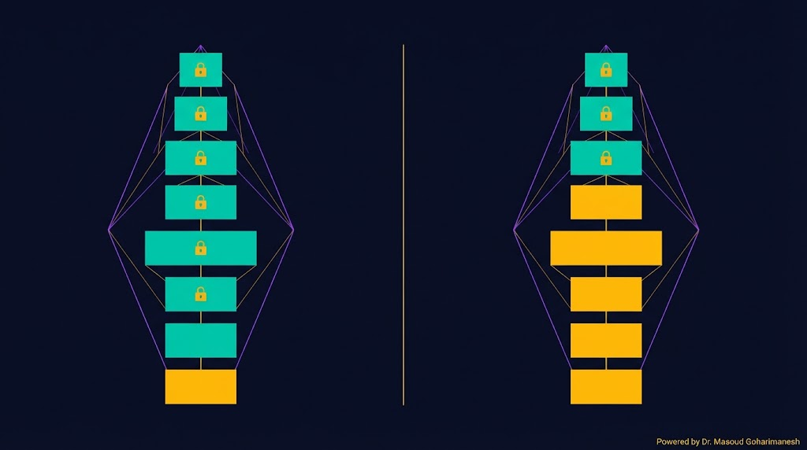
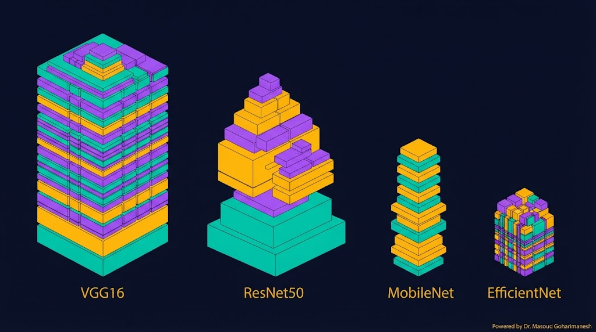
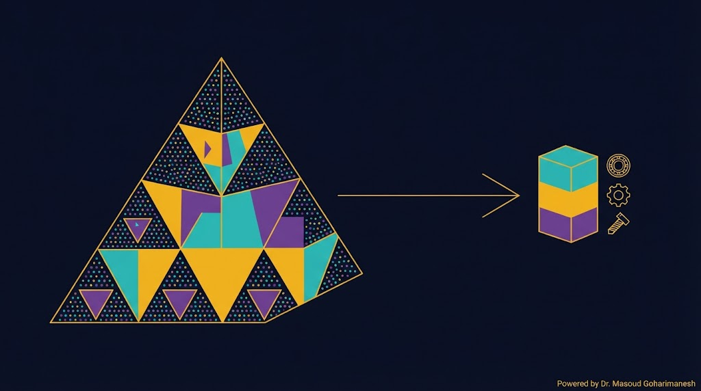
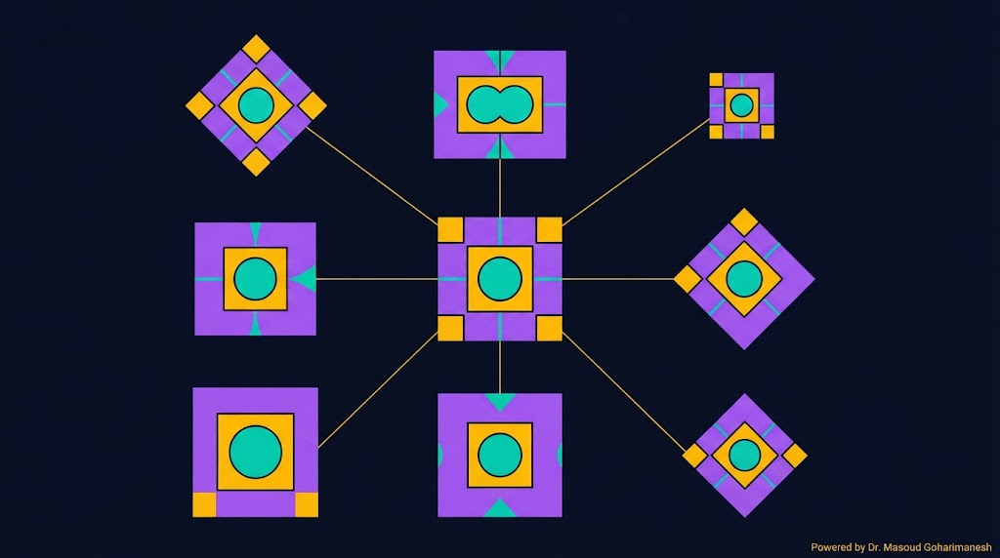
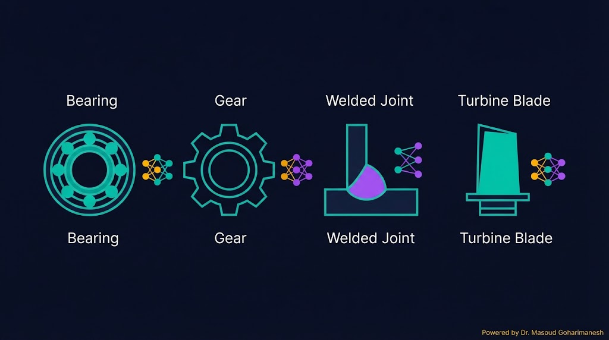

جلسه ۱۲ — Transfer Learning
جلسه ۱۲ — Transfer Learning
جلسه ۱۲ — Transfer Learning
جلسه ۱۲ — Transfer Learning
 ستاره این جلسه
به یاد شهدای والامقام
ستاره این جلسه
به یاد شهدای والامقامTransfer Learning · Fine-Tuning · Feature Extraction
From Pre-trained Models to Real Applications
MediaPipe، Hand Tracking، Pose
Transfer Learning، Fine-Tuning
✅ Transfer Learning چیست؟
✅ Feature Extraction vs Fine-Tuning
✅ مدلهای پیشآموزشدیده (VGG، ResNet، EfficientNet)
✅ Freeze کردن لایهها
✅ Data Augmentation
✅ کاربرد در مکانیک
آموزش یک CNN از صفر به دادهی عظیم (ImageNet: ۱۴ میلیون تصویر) و محاسبات سنگین نیاز دارد. اما در مسائل واقعی مهندسی مکانیک، معمولاً فقط چند صد تصویر داریم — مثلاً ۵۰۰ عکس از بلبرینگ سالم و معیوب.
Transfer Learning این مشکل را حل میکند: یک مدل که روی میلیونها تصویر آموزش دیده، دانش پایهای (لبه، بافت، شکل) را دارد. ما فقط لایههای آخر را برای مسئله خودمان آموزش میدهیم — با داده کم.
از هفتهها به ساعتها
چند صد تصویر کافی است
حتی از آموزش از صفر بهتر
روی لپتاپ هم قابل اجراست
به جای آموزش یک شبکه از صفر، از یک شبکه که قبلاً روی یک مسئله بزرگ (مثلاً ImageNet) آموزش دیده استفاده میکنیم. دانش آن مدل را «منتقل» میکنیم به مسئله جدید.

| مفهوم | معنی |
|---|---|
| Source Domain | مسئله اصلی — مثلاً ImageNet |
| Target Domain | مسئله جدید — مثلاً تشخیص بلبرینگ |
| Pre-trained | مدل آموزشدیده روی Source |
| Fine-Tuning | تنظیم دقیق برای Target |

همه لایههای پایه یخزده — فقط لایه آخر (head) آموزش میبیند.
چه زمانی: داده کم (کمتر از ۱۰۰۰)، شبیه بودن دامنه
سرعت: بسیار سریع
چند لایه آخر یخزدنشده و با نرخ یادگیری کم آموزش میبینند.
چه زمانی: داده متوسط تا زیاد، دامنه متفاوت
سرعت: کندتر، اما دقت بالاتر
لایههایی که یخزده (frozen) میشوند، آموزش نمیبینند. بقیه لایهها آموزش میبینند.

| مدل | پارامتر | دقت ImageNet | کاربرد |
|---|---|---|---|
| VGG16 | ۱۳۸M | ۹۲.۷٪ | پایه — سنگین |
| ResNet50 | ۲۵M | ۹۳.۶٪ | پرکاربرد — تعادل |
| MobileNetV2 | ۳.۴M | ۹۰.۱٪ | سبک — موبایل |
| EfficientNet-B0 | ۵.۳M | ۹۳.۲٪ | بهترین نسبت دقت/پارامتر |
مدل ResNet50 که روی ۱۰۰۰ کلاس ImageNet (گربه، سگ، ماشین) آموزش دیده، میتواند به تشخیص بلبرینگ سالم/معیوب کمک کند.

لبه، رنگ — برای همه تصاویر مفید
بافت، شکل — برای همه تصاویر مفید
اشیاء کامل — قابل استفاده
باید بازآموزی شود — مخصوص مکانیک
مقایسه آموزش از صفر با Transfer Learning.
VGG، ResNet یا EfficientNet
Freeze همه لایههای پایه
لایههای مخصوص مسئله شما
با نرخ یادگیری بالا
در صورت نیاز، لایههای آخر
from tensorflow.keras.applications import ResNet50 from tensorflow.keras import layers, models # ۱. لود مدل پیشآموزشدیده (بدون head) base = ResNet50(weights='imagenet', include_top=False, input_shape=(224, 224, 3)) # ۲. یخزدن همه لایهها for layer in base.layers: layer.trainable = False # ۳. ساخت مدل جدید x = base.output x = layers.GlobalAveragePooling2D()(x) x = layers.Dense(128, activation='relu')(x) output = layers.Dense(3, activation='softmax')(x) # ۳ کلاس model = models.Model(inputs=base.input, outputs=output)
# Fine-Tuning: باز کردن چند لایه آخر for layer in base.layers[:-20]: layer.trainable = False for layer in base.layers[-20:]: layer.trainable = True # کامپایل با نرخ یادگیری کوچک model.compile( optimizer=tf.keras.optimizers.Adam(1e-5), loss='categorical_crossentropy', metrics=['accuracy'] )
اندازه داده را تغییر دهید و ببینید کدام رویکرد مناسبتر است.
وقتی داده کم است، از هر تصویر چند نسخه تغییر یافته میسازیم. این کار بدون نیاز به داده جدید، تنوع را زیاد میکند.

from tensorflow.keras.preprocessing.image import ImageDataGenerator train_datagen = ImageDataGenerator( rescale=1./255, rotation_range=20, # چرخش width_shift_range=0.1, # جابهجایی افقی height_shift_range=0.1, # جابهجایی عمودی shear_range=0.2, # کجشدگی zoom_range=0.2, # زوم horizontal_flip=True, # آینه افقی fill_mode='nearest' )

با ۵۰۰ تصویر از سطح بلبرینگ
با ۳۰۰ تصویر از جوش
با ۲۰۰ تصویر از پره
با ۴۰۰ تصویر از قطعه
import tensorflow as tf from tensorflow.keras.applications import ResNet50 from tensorflow.keras import layers, models from tensorflow.keras.preprocessing.image import ImageDataGenerator # ۱. لود داده با Augmentation train_datagen = ImageDataGenerator( rescale=1./255, rotation_range=20, horizontal_flip=True, validation_split=0.2 ) train_gen = train_datagen.flow_from_directory( 'data/train', target_size=(224, 224), batch_size=32, class_mode='categorical', subset='training' ) val_gen = train_datagen.flow_from_directory( 'data/train', target_size=(224, 224), batch_size=32, class_mode='categorical', subset='validation' ) # ۲. مدل پیشآموزشدیده (frozen) base = ResNet50(weights='imagenet', include_top=False, input_shape=(224, 224, 3)) base.trainable = False # ۳. اضافه کردن head x = base.output x = layers.GlobalAveragePooling2D()(x) x = layers.Dense(256, activation='relu')(x) x = layers.Dropout(0.5)(x) output = layers.Dense(3, activation='softmax')(x) model = models.Model(inputs=base.input, outputs=output) # ۴. کامپایل و آموزش model.compile( optimizer=tf.keras.optimizers.Adam(1e-3), loss='categorical_crossentropy', metrics=['accuracy'] ) history = model.fit( train_gen, validation_data=val_gen, epochs=10 ) # ۵. Fine-Tuning (اختیاری) base.trainable = True for layer in base.layers[:-20]: layer.trainable = False model.compile( optimizer=tf.keras.optimizers.Adam(1e-5), loss='categorical_crossentropy', metrics=['accuracy'] ) model.fit(train_gen, validation_data=val_gen, epochs=5)
% لود ResNet50 net = resnet50; % یخزدن همه لایهها layers = net.Layers; for i = 1:numel(layers) if isa(layers(i), 'nnet.cnn.layer.LearnableLayer') layers(i).WeightLearnRateFactor = 0; layers(i).BiasLearnRateFactor = 0; end end % جایگزینی لایه آخر layers(end-2:end) = [ fullyConnectedLayer(3, 'WeightLearnRateFactor', 10, ... 'BiasLearnRateFactor', 10) softmaxLayer classificationLayer ]; % آموزش options = trainingOptions('sgdm', 'InitialLearnRate', 1e-4, ... 'MaxEpochs', 10, 'MiniBatchSize', 32); net = trainNetwork(imds, layers, options);
سریع، برای داده کم
دقت بالا، برای داده متوسط
[AI] HW12 - نام - شماره دانشجویی به arcslab.uth@gmail.com
جستوجوی پروژههای Transfer Learning
جلسه ۱۲ — اصلیتحلیل کد Keras
پشتیبانتولید کد Transfer Learning
پیشنهادیدر Perplexity جستوجو کنید: «Transfer Learning bearing fault diagnosis 2024» و ۳ مقاله معتبر پیدا کنید.
استفاده از دانش مدل پیشآموزشدیده
فقط head آموزش میبیند
چند لایه آخر با نرخ یادگیری کم
VGG، ResNet، MobileNet، EfficientNet
افزایش داده بدون داده جدید
Next Session: Reinforcement Learning — Introduction
• Reinforcement Learning — مقدمه
• Agent، Environment، Reward
• MDP — Markov Decision Process
• Q-Learning
• کاربرد در کنترل و رباتیک